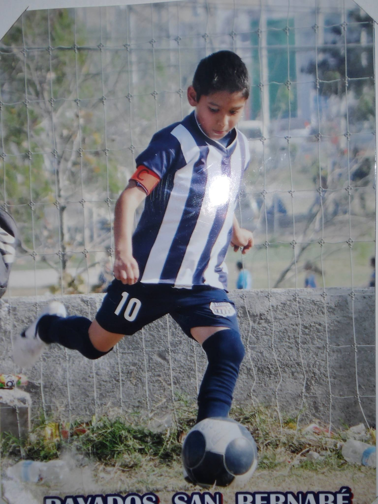

¿Quién Soy Yo?
Mi nombre es Miguel Ángel Banda Obregón actualmente estudio en la Facultad de Contaduría Pública y Administración (FACPyA) estudiando la carrera de Licenciado en Tecnologías de la Información (LTI). En cuestión de la carrera me quiero especializar en el ámbito de las bases de datos es lo que me llama la atención por el momento, estoy pensando en meterme a cursos de acerca de un analista de datos para estar preparado para el mundo laboral. En las siguientes secciones hablare acerca de mis pasatiempos.
FÚTBOL
Bueno uno de mis pasatiempos favoritos diría yo mi favorito es jugar al Fútbol lo e practicado desde los 6 años de edad, al principio empezó como algo para hacer deporte solamente algo pasajero, pero termino siendo mi deporte favorito y termino siendo una actividad que me saca de un momento triste.
Actualmente ya solo lo juego por diversión, por pasar el rato pero hubo una época entre los 12 a 16 años donde si lo aspiraba a un futuro a dedicarme a esto de grande, pero después de pandemia en cuestión de deportes no volvió a ser lo mismo y decidí dejar ese "sueño" y estudiar algo en lo cuál hubiera futuro.